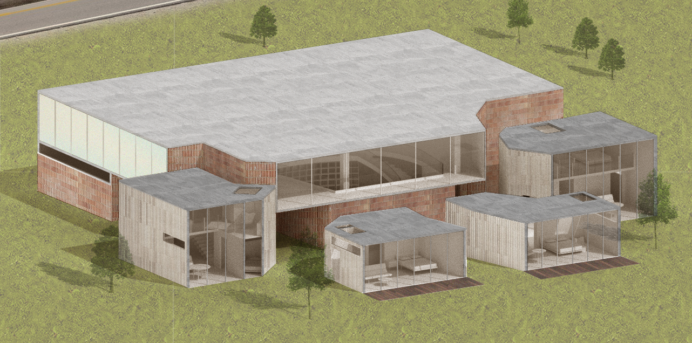
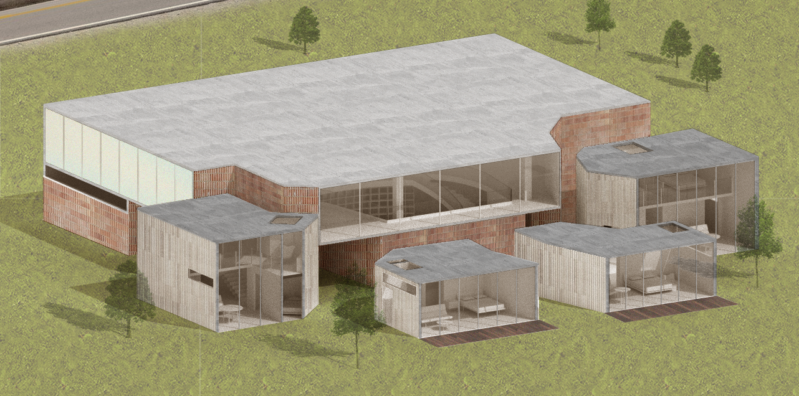
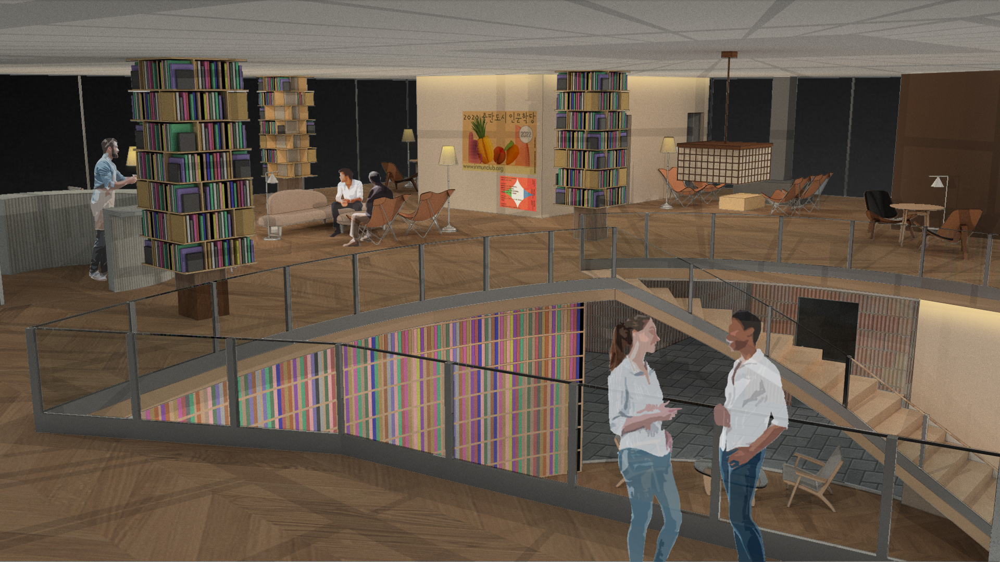
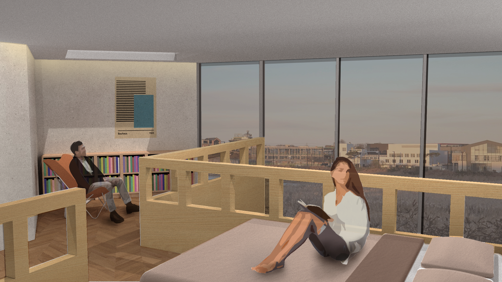
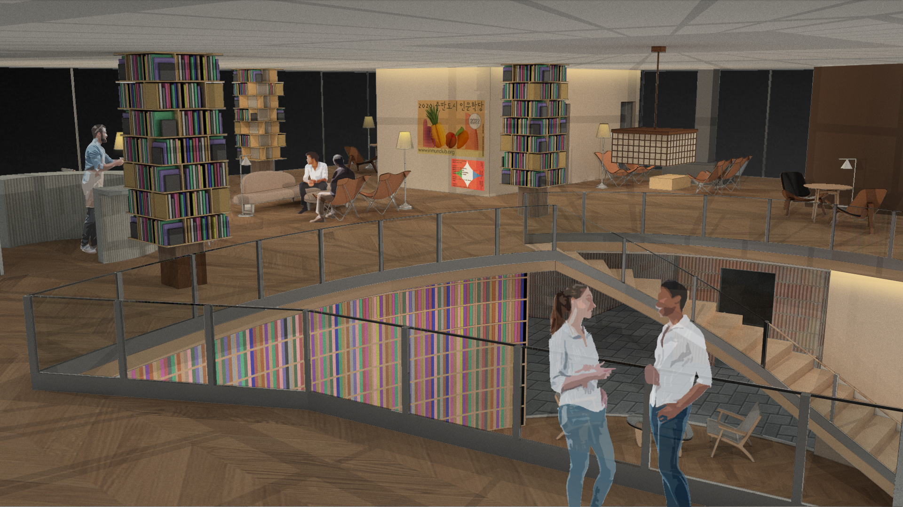
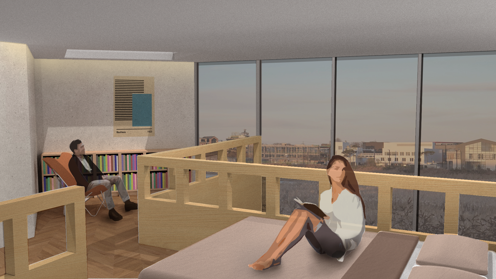
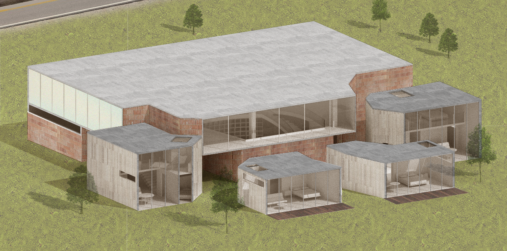
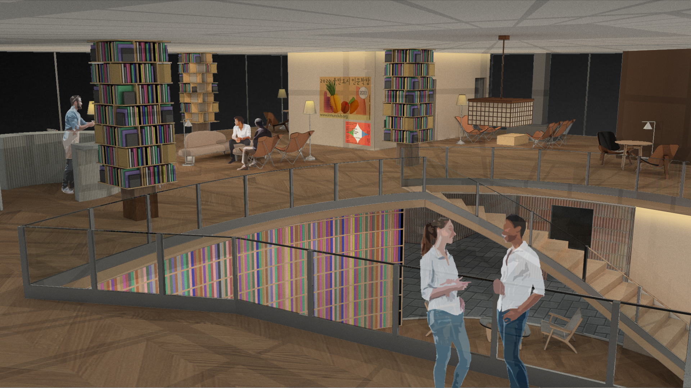
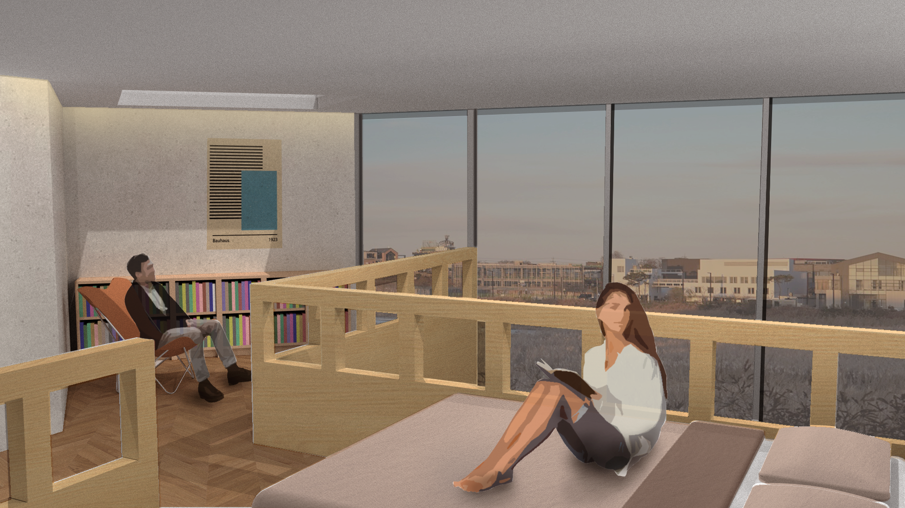

 



This project imagines a temporary theatre in Hodson’s Folly, Cambridge, to house Luigi Pirandello’s play Six Characters in Search of an Author in an immersive theatre experience. The striking scaffolding grid lightly sits on both sides of the existing brick wall, defining both the main stage area and the foyer. As the audience moves into the theatre from the foyer, the elongated entranceway with an intriguing interplay between light and shadow provides the sense of an immersive transition into the fantastical realm of theatre, itself a major theme in the play. With the interaction of the overarching grid with the entranceway, the backstage, and both sides of the existing wall, addressed as the barrier dividing the real from the theatrical, the project seeks to highlight the potential of the theatre typology as a space for both theatrical fiction and real-life experiences.


